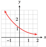
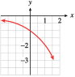

Exercises 5.1 Inverse Functions (Homework 5.1)
¶1.
Let \(f (-1) = 0\text{,}\) \(f (0) = 1\text{,}\) \(f (1) = -2\text{,}\) and \(f (2) = -1\text{.}\)
Make a table of values for \(f (x)\) and another table for its inverse function.
Find \(f^{-1}(1) \)
Find \(f^{-1}(-1) \)
2.
Let \(f (-1) = 1\text{,}\) \(f (-1) = -2\text{,}\) \(f (0) = 0\text{,}\) and \(f (1) = -1\text{.}\)
Make a table of values for \(f (x)\) and another table for its inverse function.
Find \(f^{-1}(-1) \)
Find \(f^{-1}(1) \)
3.
\(f (x) = x^3+x+1\)
Make a table of values for \(f (x)\) and another table for its inverse function.
Find \(f^{-1}(1) \)
Find \(f^{-1}(3) \)
4.
\(f (x) =x^5+x^3+7 \)
Make a table of values for \(f (x)\) and another table for its inverse function.
Find \(f^{-1}(7) \)
Find \(f^{-1}(5) \)
For Problems 5-8, use the graph to evaluate each expression.
5.
An insurance investigator measures the length, \(d\text{,}\) of the skid marks at an accident scene, in feet. The graph shows the function \(v = f (d)\text{,}\) which gives the velocity, \(v\) (mph), at which a car was traveling when it hit the brakes.

Use the graph to estimate \(f (60)\) and explain its meaning in this context.
Use the graph to estimate \(f^{-1}(60)\) and explain its meaning in this context.
6.
The weight, \(m\text{,}\) of a missile launched from a catapult is a function of the distance, \(d\text{,}\) to the target. The graph shows the function \(m = f (d)\text{,}\) where \(d\) is in meters and \(m\) is in kilograms.

Use the graph to estimate \(f (100)\) and explain its meaning in this context.
Use the graph to estimate \(f^{-1}(100)\) and explain its meaning in this context.
7.
After eating, the weight of a vampire bat drops steadily until its next meal. The graph shows the function \(W = f (t)\text{,}\) which gives the weight, \(W\text{,}\) of the bat in grams \(t\) hours since its last meal.

What are the coordinates of the point of starvation? Include units in your answer.
Use the graph to estimate \(f^{-1}(90)\) and explain its meaning in this context.
8.
The amount of money, \(A\text{,}\) in an interest-bearing savings account is a function of the number of years, \(t\text{,}\) it remains in the account. The graph shows \(A = f (t)\text{,}\) where \(A\) is in thousands of dollars.

Use the graph to estimate \(f (30)\) and explain its meaning in this context.
Use the graph to estimate \(f^{-1}(30)\) and explain its meaning in this context.
9.
The function \(I = g(r ) = (1 + r )^5 - 1\) gives the interest, \(I\text{,}\) that a dollar earns in \(5\) years in terms of the interest rate, \(r\text{.}\)
Evaluate \(g(0.05)\) and explain its meaning in this context.
Find the interest rate needed to earn \(\$0.50\) by substituting \(I = 0.50\) in the formula and solving for \(r\text{.}\)
Find a formula for the inverse function.
Write your answer to part (b) with inverse function notation.
10.
The function \(C = h(F) = \dfrac{5}{9}(F - 32)\) gives the Celsius temperature \(C\) in terms of the Fahrenheit temperature \(F\text{.}\)
Evaluate \(h(104)\) and explain its meaning in this context.
Find the Fahrenheit temperature of \(37\degree\) Celsius by substituting \(C = 37\) in the formula and solving for \(F\text{.}\)
Find a formula for the inverse function.
Write your answer to part (b) with inverse function notation.
11.
If you are flying in an airplane at an altitude of \(h\) miles, on a clear day you can see a distance of \(d\) miles to the horizon, where \(d = f (h) = \sqrt{7920h}\text{.}\)
Evaluate \(f(0.5)\) and explain its meaning in this context.
Find the altitude needed in order to see a distance of \(10\) mile by substituting \(d = 10\) in the formula and solving for \(h\text{.}\)
Find a formula for the inverse function.
Write your answer to part (b) with inverse function notation.
12.
A moving ship creates waves that impede its own speed. The function \(v = f (L) = 1.3\sqrt{L}\) gives the ship's maximum speed in knots in terms of its length, \(L\text{,}\) in feet.
Evaluate \(f(400)\) and explain its meaning in this context.
Find the length needed for a maximum speed of \(35\) knots by substituting \(v = 35\) in the formula and solving for \(L\text{.}\)
Find a formula for the inverse function.
Write your answer to part (b) with inverse function notation.
13.
Use the graph of \(h(x) = \sqrt{5 - x}\) to find \(h^{-1}(3)\text{.}\)
Find a formula for \(h^{-1}(x)\) and evaluate \(h^{-1}(3)\text{.}\)

14.
Use the graph of \(g(x) = \dfrac{1}{3 - x}\) to find \(g^{-1}(-2)\text{.}\)
Find a formula for \(g^{-1}(x)\) and evaluate \(g^{-1}(-2)\text{.}\)
15.
Find \(f^{-1}\) for the function \(f (x) = (x - 2)^3\text{.}\)
Show that \(f^{-1}\) undoes the effect of \(f\) on \(x = 4\text{.}\)
Show that \(f\) undoes the effect of \(f^{-1}\) on \(x = -8\text{.}\)
Graph the function and its inverse on the same grid, along with the graph of \(y = x\text{.}\)
16.
Find \(f^{-1}\) for the function \(f (x) = \dfrac{2}{x+1} \text{.}\)
Show that \(f^{-1}\) undoes the effect of \(f\) on \(x = 3\text{.}\)
Show that \(f\) undoes the effect of \(f^{-1}\) on \(x = -1\text{.}\)
Graph the function and its inverse on the same grid, along with the graph of \(y = x\text{.}\)
17.
If \(F(t) = \dfrac{2}{3}t + 1\text{,}\) find \(F^{-1}(5)\text{.}\)
18.
If \(G(s) = \dfrac{s-3}{4} \text{,}\) find \(G^{-1}(-2)\text{.}\)
19.
If \(m(v) =6- \dfrac{2}{v}\text{,}\) find \(m^{-1}(-3)\text{.}\)
20.
If \(p(z) = 1- 2z^3 \text{,}\) find \(p^{-1}(7)\text{.}\)
21.
If \(f(x) = \dfrac{x+2}{x-1}\text{,}\) find \(f^{-1}(2)\text{.}\)
22.
If \(g(n) = \dfrac{3n+1}{n-3} \text{,}\) find \(g^{-1}(-2)\text{.}\)
For Problems 23–26,
Use the graph to make a table of values for the function \(y = f (x)\text{.}\)
Make a table of values and a graph of the inverse function.
23.

24.

25.

26.

For Problems 27–32,
Find a formula for the inverse of the function.
Graph the function and its inverse on the same set of axes, along with the graph of \(y = x\text{.}\)
27.
\(f(x)=2x-6 \)
28.
\(f(x)=3x-1 \)
29.
\(f(x)=x^3+1 \)
30.
\(f(x)=\sqrt[3]{x+1} \)
31.
\(f(x)=\dfrac{1}{x-1} \)
32.
\(f(x)=\dfrac{1}{x}-3 \)
33.
Find the domain and range of the function \(g(x) = \sqrt{4 - x}\text{.}\)
Find a formula for \(g^{-1}(x)\text{.}\)
State the domain and range of \(g^{-1}(x)\text{.}\)
Graph \(g\) and \(g^{-1}\) on the same grid.
34.
Find the domain and range of the function \(g(x) =8- \sqrt{x}\text{.}\)
Find a formula for \(g^{-1}(x)\text{.}\)
State the domain and range of \(g^{-1}(x)\text{.}\)
Graph \(g\) and \(g^{-1}\) on the same grid.
Which of the functions in Problems 35–42 have inverses that are also functions?
35.

36.

37.
\(f(x)=x \)
\(f(x)=x^2 \)
38.
\(f(x)=x^3 \)
\(f(x)=\abs{x} \)
39.
\(f(x)=\dfrac{1}{x} \)
\(f(x)=\dfrac{1}{x^2} \)
40.
\(f(x)=\sqrt{x} \)
\(f(x)=\sqrt[3]{x} \)
41.
\(f(x)=2^x \)
\(f(x)=\left(\dfrac{1}{2}\right)^x \)
42.
\(f(x)=x^3+x^2 \)
\(f(x)=x^3+x \)
43.
Match each function with its inverse from I–IV.

44.
Find a formula for each function shown in (a)–(d). Then match each function with its inverse from I–IV.

For Problems 45 and 46, use the graph of \(f\) to match the other graphs with the appropriate function. (Hint: Look at the coordinates of some specific points.)
45.

\(-f\)
\(\dfrac{1}{f} \)
\(f^{-1} \)

- 
- 
46.

\(-f\)
\(\dfrac{1}{f} \)
\(f^{-1} \)